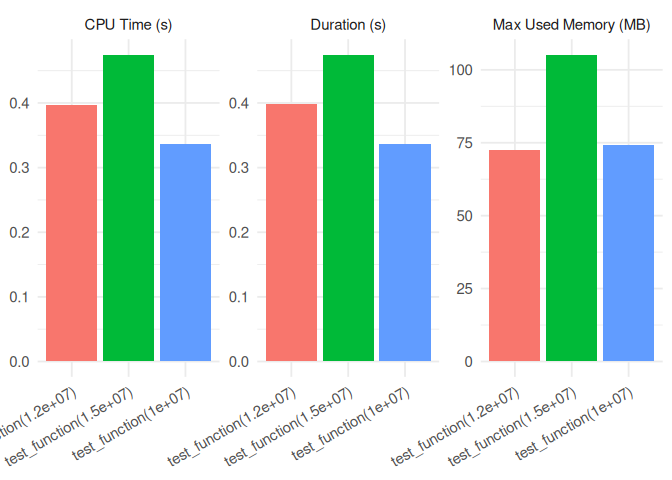

Overview
The goal of timemoir is to benchmark the memory usage, CPU usage, and execution time of functions that cannot be accurately profiled using traditional benchmarking tools. It is particularly useful for profiling long-running or memory-intensive operations, such as those involving in-memory analytics with arrow or duckdb.
Unlike traditional profilers like Rprof() or profmem, timemoir uses a forked R process to run each function in isolation, while the parent process monitors memory consumption via ps::ps_memory_info() and proc.time().
It’s a simple but effective approach.
Features:
- Memory Profiling: Tracks initial and peak memory usage (
start_mem,max_mem) - CPU Usage: Measures user and system CPU time
- Elapsed Time: Captures real execution time (
proc.time) - Error Handling: Catches and reports errors without stopping the benchmarking loop
- Repetition: Supports repeated benchmarking with
nruns per function
❗ Note: This package works only on Unix. It relies on parallel package to fork a process.
Installation
To install the package, run the following command in your R console:
devtools::install_github("nbc/timemoir")Example
library(timemoir)
library(ggplot2)
test_function <- function(n) {
x <- rnorm(n)
mean(x)
}
res <- timemoir(
test_function(1.2e7),
test_function(1.5e7),
test_function(1e7)
)
res
#> # A tibble: 3 × 7
#> fname duration error start_mem max_mem cpu_user cpu_sys
#> <chr> <dbl> <chr> <int> <dbl> <dbl> <dbl>
#> 1 test_function(1.2e+07) 0.399 <NA> 111236 185476 0.336 0.061
#> 2 test_function(1.5e+07) 0.475 <NA> 111236 219012 0.404 0.071
#> 3 test_function(1e+07) 0.337 <NA> 111236 187140 0.277 0.059
autoplot(res)
Why use timemoir?
Benchmarking tools like bench::mark() or microbenchmark() are powerful for fast functions. But if you’re dealing with:
- Queries that stream data from disk,
-
duckdb::dbGetQuery()on large tables, -
arrow::open_dataset()and lazy evaluations, - or R functions with unpredictable memory usage,
…then timemoir gives you visibility into what’s really happening — in memory, CPU and in time.